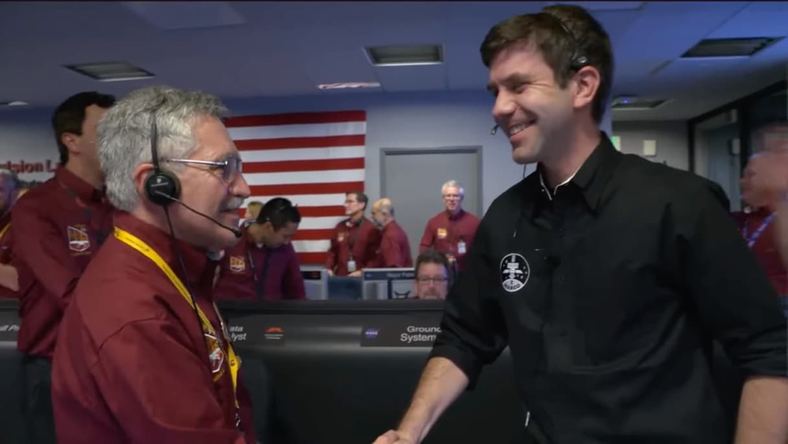
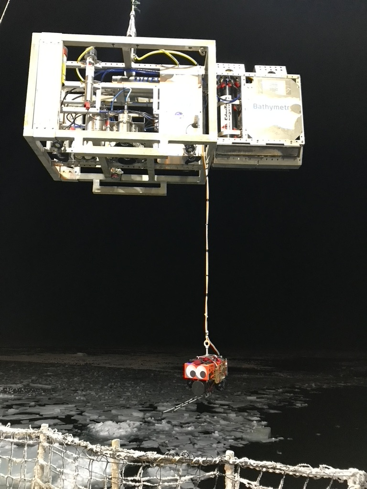
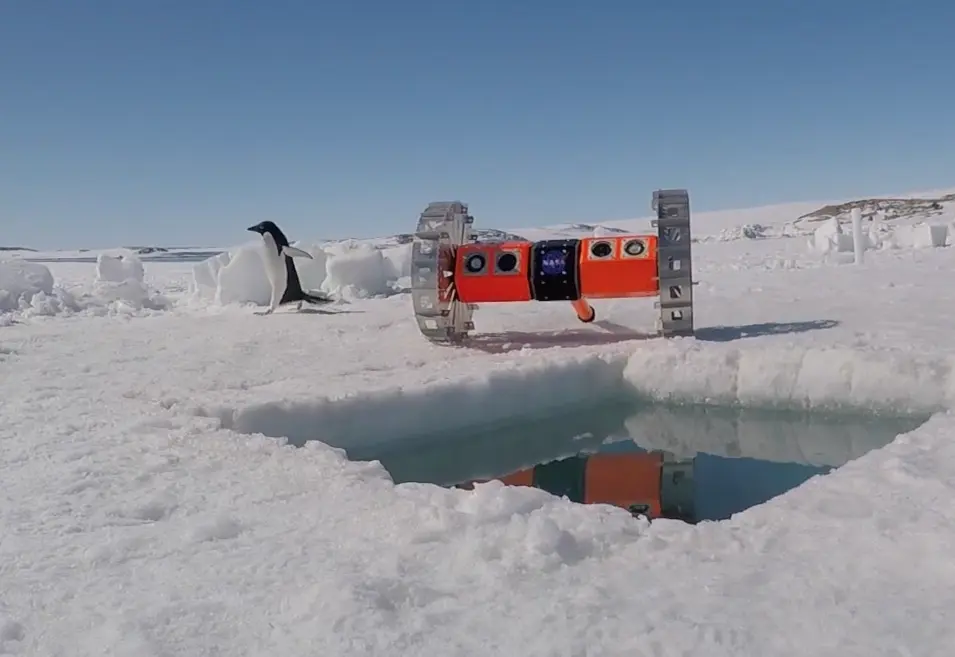

Active Research
Intriguing Questions and Motivations
Casey Station, Antarctica / Credit: NASA/JPLCurrent Research Questions
At its core, exploration is about observation, obtaining a unique vantage to ask questions and seek answers. In my research, I pursue novel means to obtain such vantage points, often making use of collaborative systems or sensors to obtain multiple simultaneous views. Multiple perspectives significantly extend our ability to observe challenging or ephemeral phenomena... and in doing so, unlock new understanding.
As humans, we are driven to climb that next hill or look around the next bend. It's in our nature to be curious, but there are many arenas where our physical fragility limits our ability to make observations. This limitation can be overcome through the use of tools, extending our reach into extreme environments. Sometimes, this means submarines or spacesuits, life-support systems allowing us to travel further, deeper, higher. Sometimes, it's with robots or instrumentation, allowing these assets to be our hands and eyes.
Despite our drive, we remain limited. How do we build tools that can observe the ephemeral, dangerous, or obscure? How do we build systems that can withstand the extremes of the natural world?
The Ephemeral
In 2018, when the InSight lander was to land on Mars, planetary alignment was such that existing orbital assets could not provide a real-time relay of the dangerous entry-descent-and-landing (EDL) phase. Ideally, InSight would land safely. If it did not, there would be no complete record of what went wrong. And an onboard "blackbox" is of no use without possibility of recovery.
Instead, our team's two CubeSats, MarCO-A and MarCO-B (Eva and Wall-E) launched with InSight, independently traveled to Mars, and provided real-time relay of EDL data back to Earth. These spacecraft were small, built fast, and relatively cheap. And the program accepted higher than normal risk. Despite this, these two vehicles, with extremely focused objectives, were optimized to maximize InSight data return.
They succeeded - wildly.

Transient events, such as Mars EDL, benefit from multiple simultaneous viewpoints. We look to small spacecraft to serve as assets that can respond quickly to time-sensitive events or provide otherwise unique vantage points.
While the "Mars perspective" is distant, similar transient events occur in our own planetary environment. When volcanoes in Iceland threatened eruption, our team rushed to install a Distributed Acoustic Sensing (DAS) system to observe. Thanks to these efforts, led by Prof Zhongwen Zhan, a prototype early-warning system was demonstrated, allowing for an alert up to 27 minute in advance of lava reaching the surface. Today, the Icelandic Meteorological Office has integrated low-frequency DAS fiber measurements as one component of its evaluation when issuing alerts.
A key goal in this line of research is developing the tools and mission architectures to enable the rapid, intelligent deployment of assets and sensors to observe transient events, ensuring that we can capture critical data at the most important moments.
The Dangerous
While deep ocean hydrothermal vent fields are believed to be fed from water seeping from fracture zones, underwater volcanic eruptions often leave lava passageways similar to the lava tubes we find terrestrially. Submersible pilots have reported that the HOV Alvin has even collapsed the ceilings of such passages when settling on the ocean bottom in certain locations, such as the Axial Seamount. In fact, in 1975, Alvin almost became stuck in such a confined spot.
How might these deep ocean tubes connect to existing vent fields? What structures might hardening lava produce in the significant pressures of the deep? As of yet, we have only seen glimpses through narrow skylights. And how might these structures serve as an analogue environment to ocean worlds beyond our own, such as under the seas of Jupiter's moon Europa?

In 2019, we built the mini-rescue submersible SpongeBob SpareParts and successfully dove to 4000m. In subsequent years, both AWI and JPL have built advanced mini-submersibles using commercial parts. Now, the time is ripe to combine the experience from the sub-orbital, orbital, and deep-sea communities to explore these deep ocean labyrinths.
Where humans dare not tread, robots can.
The Obscure
Life tends to live on interfaces. Terrestrially, plants adhere to the surface, animals walk the Earth. In the ocean, life drifts toward the bottom. In a frozen ocean, life also adheres to the ice. Here, at the ice-ocean interface, life flourishes.
This location, unfortunately, is largely out of reach. However, as Dr. Kevin Hand says, "it is a lens" through which we can examine our solar system's ocean worlds. Once lakes in northern Alaska freeze over, the ice descends inexhaustibly toward the bottom, trapping methane seeps, algal mats, and a variety of critters large and small.
We deployed BRUIE, our buoyant rover for under-ice exploration, for multiple months to study these seeps and the surrounding environment. BRUIE, by nature of its buoyancy, is always anchored to the underside of the ice. It can slowly crawl, examine, and measure the under-ice and lake-bottom environment, seeking clues to how and why life might live in these extremes. No human can remain here for months on end, yet BRUIE treks on, running on 80 C-cell Energizer batteries.

To truly make BRUIE effective, algorithmic autonomy must be married with software reliability. Scientist desires mapped to engineering capabilities. Operational readiness in spite of environmental extremes.
Now, our team is working to add path-planning, seep detection, and even obstacle avoidance (challenging when many obstacles are translucent ice!) to the vehicle to expand its ability to explore in our stead. In addition, we use the low-bandwidth high-latency acoustic modem link tied to Starlink basestations as a close analogue to how scientists and engineers will need to remotely operate when exploring Europa.
Training for Europa begins today.
Technology Focuses and Applications
I use small spacecraft, ROV/AUVs, and robots in my work as they provide accessible platforms and can be built in numbers. I'm particularly interested in how we can use larger sets of such low-cost (and sometimes disposable) assets to maximize our ability to explore. This likely means optimizing operations, especially if multiple assets support a single human, and utilizing onboard autonomy to reduce workload. In both deep space and deep ocean operations, this may require optimizing communications - not all data can be transmitted, nor can an individual digest large amounts of data. It also means optimizing interfaces - how can we present the state of the environment and multi-agent system such that a human can control them?
In practice, using these assets to explore extreme environments has meant developing vehicles & technologies that are low cost and potentially disposable. I promote hardware-rich development to allow for iterative testbeds with the best tests occurring in realistic analogues. This means that the same tools can often be used across projects, simply with different packaging and interfaces. Ideally, we would apply this principal across environments, using the ocean as an iterative testbed for future space missions for software, electronics, operations and crew training.
I specifically enjoy applications that directly extend in-situ human exploration. The use of DAS on the Moon to provide localization for astronauts and rovers; deploying mini-submersibles to provide additional lighting and cameras for Alvin or remote divers; and operations that utilize a human as the orchestrator. I have a long-term goal of augmenting human operations with multiple assets and augmented sensing to better allow for human exploration regardless of specific environment.